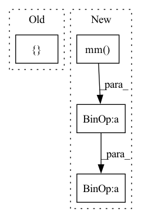

Pattern ID :35753

Before Change
ce = None
ce_grad = None
return [f,f_grad,ci,ci_grad,ce,ce_grad]
After Change
V.requires_grad_(True)
D = torch.tensor([[1, 1, 1, 1],[1, 1, 1, 1],[1, 1, 1, 1]])
D_UV = D - torch.mm(U,torch.transpose(V, 0, 1)) // transpose(Tensor input, int dim0, int dim1)
// objective function
f = .5 * torch.norm(D_UV, p = "fro")**2
// f_grad = f_gradStruct()
// // gradient of objective function, matrix form
In pattern: SUPERPATTERN
Frequency: 3
Non-data size: 4
Instances
Fragment ID: 101662783
Project Name: sun-umn/pygranso
Commit Name: 0d208adde71a70226c1176ae83563c442c16967f
Time: 2021-07-19
Author: liang664@umn.edu
File Name: Python_version/examples/autodiff_ex0/combinedFunction.py
M Class Name: AnonimousClass
N Class Name: AnonimousClass
M Method Name: combinedFunction(1)
N Method Name: combinedFunction(1)
M Parent Class:
N Parent Class:
M File Name: Python_version/examples/autodiff_ex0/combinedFunction.py
N File Name: Python_version/examples/autodiff_ex0/combinedFunction.py
M Start Line: 20
M End Line: 50
N Start Line: 21
N End Line: 53
'>
Before Change
@staticmethod
def _single_calc(fn_input, sequence_input, linear_param):
out = fn_input - fn_input.mean(dim=0, keepdim=True)
out0, out1 = torch.nn.functional.linear(torch.cat([out, sequence_input], 1),
linear_param,
None).chunk(2, 1)
return torch.sigmoid(out0) * out1.tanh()
After Change
def _single_calc(fn_input, sequence_input, linear_param):
out = fn_input - fn_input.mean(dim=0, keepdim=True)
features = out.size(1)
out = torch.mm(out, linear_param[:features]) + torch.mm(sequence_input, linear_param[features:])
return torch.nn.functional.relu6(out[:, :features]) * out[:, features:].tanh()
@staticmethod
def _calc(fn_input, sequence_input, linear_param, depth):
'>
Fragment ID: 101662796
Project Name: homebrewnlp/homebrewnlp
Commit Name: 2c4b92319ccca8f3a6f7c2677b9f0fbf88f7b8db
Time: 2020-08-05
Author: 39779310+ClashLuke@users.noreply.github.com
File Name: module.py
M Class Name: ReversibleRNNFunction
N Class Name: ReversibleRNNFunction
M Method Name: _single_calc(3)
N Method Name: _single_calc(3)
M Parent Class: torch.autograd.Function
N Parent Class: torch.autograd.Function
M File Name: module.py
N File Name: module.py
M Start Line: 8
M End Line: 12
N Start Line: 7
N End Line: 10
'>
Before Change
enc_output = torch.matmul(torch.tanh(torch.matmul(enc_output, self.W2) + self.b2), self.W3) + self.b3
outputs = [enc_output]
if return_states == True:
outputs = outputs + enc_outputs
After Change
enc_output = torch.matmul(torch.tanh(torch.matmul(enc_output, self.W2) + self.b2), self.W3) + self.b3
norm_vec = F.normalize(enc_output, p=2, dim=1)
sim = torch.mm(norm_vec, norm_vec.T)
sim = sim + self.MIN_LOGITS * torch.eye(sim.shape[0], device=sim.device)
outputs = [sim, enc_output]
'>
Fragment ID: 101662774
Project Name: yaoxiaoyuan/mimix
Commit Name: c99132351360626eae781616d76c4e2fc9426a74
Time: 2022-07-19
Author: sbsbsbsbsb945@gmail.com
File Name: src/models.py
M Class Name: TransformerEncoder
N Class Name: TransformerEncoder
M Method Name: forward(5)
N Method Name: forward(5)
M Parent Class: nn.Module
N Parent Class: nn.Module
M File Name: src/models.py
N File Name: src/models.py
M Start Line: 246
M End Line: 248
N Start Line: 248
N End Line: 254